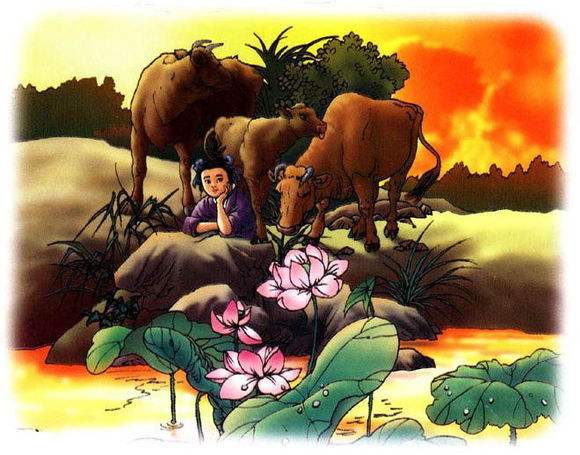

王冕学画
语文课本
古时候，有个孩子叫王冕（ mi ǎ n ）。因为家里穷，他只念了三年 书，就去给人家放牛。他一边放牛，一边找书来读。 一个夏天的傍晚，王冕在湖边放牛。忽然下了一阵大雨。大雨过 后，夕阳照得满湖生辉（ hu ī ）。湖里的荷花更鲜艳了，花瓣（ b à n ） 上清水滴滴，荷叶上水珠滚来滚去。王冕看得出神，心想，要是能把 它画下来，那多好啊！ 王冕用平时节省下来的钱买了纸、笔和颜料，每天把牛赶到湖边 吃草后，就专心地画起来。开始怎么也画不好，可是他不灰心。 他仔细观察荷叶和荷花的形状，观察清晨傍晚、雨前雨后荷花的 变化。他天天跟荷花在一起，把荷花当（ d à ng ）成了好朋友。这样练 习画了很长时间，那纸上的荷花就像刚从湖里采来的一样。